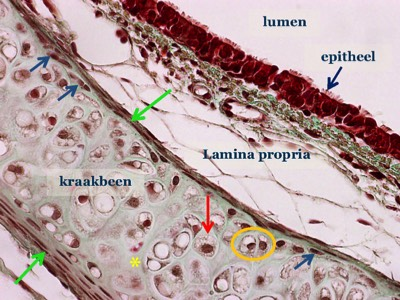
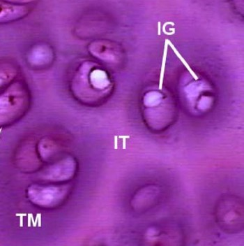

Kraakbeenmatrix
De kraakbeenmatrix is stevig maar toch veerkrachtig. Kraakbeen komt dan ook voor op plaatsen in het lichaam waar deze eigenschappen belangrijk zijn. Denk bijvoorbeeld aan de oppervlakken van gewrichten of in de wand van de luchtwegen (strottenhoofd, luchtpijp, bronchi).
De kraakbeenmatrix is stevig maar toch veerkrachtig. Kraakbeen komt dan ook voor op plaatsen in het lichaam waar deze eigenschappen belangrijk zijn. Denk bijvoorbeeld aan de oppervlakken van gewrichten of in de wand van de luchtwegen (strottenhoofd, luchtpijp, bronchi).

In deze kraakbeenring in de wand van de trachea kan je volgende structuren onderscheiden:
Perichondrium (groene pijlen), extracellulaire matrix (gele asterisk), chondrocyt (rode pijl), chondrocyten die een isogene groep vormen (oranje omcirkeld), chondroblasten (blauwe pijlen).
Zie je het onderscheid tussen territoriale en interterritoriale matrix?
Pasgevormde kraakbeenmatrix wordt onmiddellijk rondom de kraakbeencellen afgezet en heeft andere kleureigenschappen dan eerder gevormde, verderaf gelegen matrix. De matrix onmiddellijk rondom de kraakbeencellen noemen we de territoriale matrix. Verderaf gelegen matrix noemen we interterritoriale matrix. Territoriale matrix bevat minder collageenvezels en relatief veel grondsubstantie en kleurt daardoor bleker of donkerder, afhankelijk van de gebruikte kleuring.

Detail van kraakbeen. Hierop is goed te zien hoe de territoriale matrix (TM) donkerder kleurt dan de interterritoriale matrix (IT). De chondrocyten in beeld hebben isogene groepen (IG) gevormd.
Vordering zelfstudie kraakbeen: